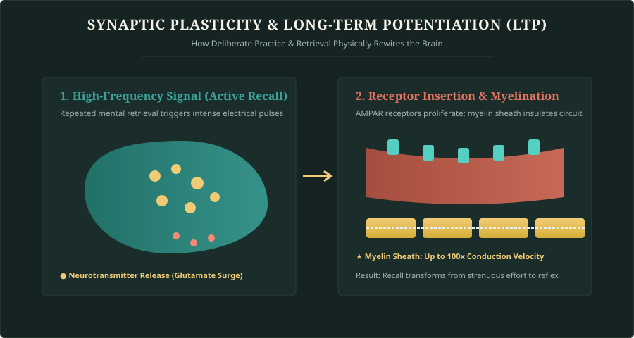
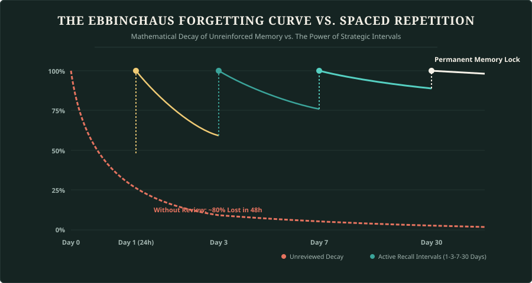

Accelerated Learning & Neuroplasticity
The human brain is not a static recording device; it is a dynamic, living neural circuit that physically remodels its physical architecture in response to cognitive demand. This biological phenomenon—known as neuroplasticity—is the bedrock of accelerated learning. Most learners spend years trapped in passive study habits (highlighting notes, casual re-reading, watching lectures on autopilot) that create what cognitive psychologists call the Illusion of Competence: the dangerous sensation that because information looks familiar on a page, it is mastered in your long-term memory.
True ultralearning operates in reverse. Instead of pushing information in, you force the brain to pull information out through high-friction retrieval. When a neuron repeatedly fires across a synapse to reconstruct a concept without looking at notes, it activates Long-Term Potentiation (LTP). The pre-synaptic terminal releases an amplified burst of glutamate, post-synaptic dendritic spines sprout new AMPA receptors, and glial cells wrap the axon in layers of myelin—a fatty insulating sheath that accelerates electrical conduction velocity by up to 100 times.

1. The Feynman Technique: The Ultimate Truth Test
Named after the Nobel Prize-winning physicist Richard Feynman, this 4-step framework guarantees conceptual mastery by stripping away superficial jargon:
- Select the Target Concept: Write the title at the top of a blank page (e.g., Quantum Superposition, Public-Key Cryptography, or Microeconomic Elasticity).
- Explain it to a 10-Year-Old Child: Write an explanation using exclusively plain, simple, everyday language. You cannot use technical buzzwords. If you say "it encrypts the data using an asymmetric cryptographic hash," you fail. Instead: "It’s like a magical padlock where anyone can snap it shut, but only you hold the one brass key that can pop it back open."
- Diagnose Knowledge Bottlenecks: The instant you struggle to explain a step without resorting to complicated terminology, you have pinpointed the exact boundary of your understanding.
- Refine, Simplify, and Anchor with Analogy: Return to primary source material, resolve the confusion, and create a physical real-world metaphor until the entire concept flows effortlessly.
2. The Ebbinghaus Forgetting Curve & Spaced Repetition
In 1885, German psychologist Hermann Ebbinghaus discovered that human memory decays along an aggressive exponential curve: within 48 hours of initial exposure, up to 75% to 80% of newly acquired information is discarded by the hippocampus unless reinforced. CRAMMING for 8 hours the night before an exam triggers intense short-term familiarity that evaporates within a week.
To bend the forgetting curve into an asymptotic flat line of permanent retention, you must deploy Spaced Repetition Systems (SRS). Each strategic review interval resets the retention rate to 100%, but the curve flattens significantly after each iteration:
- Review Interval 1 (Day 1 - 24 hours later): Initial retrieval after sleep consolidation; repairs initial decay.
- Review Interval 2 (Day 3): Strengthens synaptic connections before moderate degradation occurs.
- Review Interval 3 (Day 7): Solidifies structural dendrite spines; recall requires deliberate effort, triggering maximum LTP.
- Review Interval 4 (Day 30): Information transitions from hippocampal working memory to permanent neocortical storage.

3. Speed Reading & Subvocalization Reduction
The primary speed limit for most adult readers is subvocalization—the involuntary habit of pronouncing every word inside your head with your inner larynx. Because the human vocal cords can only speak around 150 to 250 words per minute (WPM), internal speech creates an artificial biological bottleneck.
The human visual cortex, however, processes optical images at over 1,000 WPM. To unlock speed reading without sacrificing comprehension:
- Use a Visual Pacer: Move a pen, chopstick, or your index finger smoothly underneath each line of text. The human eye is biologically wired for smooth pursuit tracking (hunting prey) rather than erratic saccadic jumps. A pacer eliminates regressions (unconsciously re-reading the last sentence).
- Expand Peripheral Fixations (Chunking): Stop fixating on every individual word. Fixate on word clusters (3–4 words per glance). Do not look at the first or last word of a line; start your eye fixation 2 words in and stop 2 words before the margin.
- Silence the Inner Voice: Practice reading with a rhythmic finger tap on your desk or humming softly to occupy the vocal motor cortex while your eyes feed pure semantic concepts directly to the visual processing stream.
The 30-Day Skill Blitz
Pick one skill you’ve delayed learning (Python programming, conversational Spanish, public speaking, or financial accounting). Strip away all theoretical lectures.
"Spend 80% of your time on direct output—writing code that breaks, speaking broken sentences to native speakers on day two, or solving real case studies. Discomfort is the physiological biomarker of neurogenesis."
Student Lab Workbook · Unit 1
Complete these reflection prompts. Your answers are automatically saved to your browser’s localStorage and can be exported at any time.
Self-Assessment: Accelerated Learning
1. What biological process physically insulates neural axons to boost electrical conduction speed up to 100 times?
2. Why does the Feynman Technique strictly prohibit the use of technical jargon?
3. According to Ebbinghaus' Forgetting Curve, roughly how much unreviewed information is lost within 48 hours?
4. What is the primary biological reason subvocalization caps reading speed at ~250 WPM?
5. Which study practice creates the highest long-term retention according to cognitive research?
Unit 1 Cognitive Mastery
Ready to lock in Unit 1 concepts? Mark this unit complete to advance your progress tracker.